Home
Eintragen in Newsletter
Livestreams von perlenschnur.org
Telegram:
Alle Videos ab 2021 auch unter: Perlenschnur eV Archiv t.me/alleslebt
und bis 2020: t.me/perlenschnurArchivBis2020
und eine Gruppe zum Diskutieren: Perlenschnur.org t.me/perlenschnur
Springen zu
L25 VardaH3 |
L24 VardaH2 |
L23 VardaH1 |
L22 Weyri |
L21 Chris |
L20 Schintl |
L19 Medit1 |
L18 Wasser1 |
L17 Astrol |
L16 MyPhy6 |
L15 Entgiftung |
L14 Kollitz |
L13 WiWü2 |
L12 WiWü1 |
L11 MyPhy5 |
L10 MyPhy4 |
L9 Kempynck |
L8 MyPhy3 |
L7 MyPhy2 |
L6 MyPhy1 |
L5 Pilhar2 |
L4 Jasinski |
L3 Körber |
L2 Below |
L1 Pilhar
#L25
25_25_25_25_25_25_25_25_25_25_25_25_25_25_25_25_25 hoch
Termin war: Donnerstag, den 17.03.2022 um 19:30 Uhr
Thema: Fortsetzung (vom 03.03. u. 10.03.22) von Ingrid Schröder über die Seelenlehre von Frau Dr. Varda Hasselmann und Frank Schmolke
(Teil 3)
Link zum Livestream:
youtube.com/watch?v=Go1bf8nG2B0
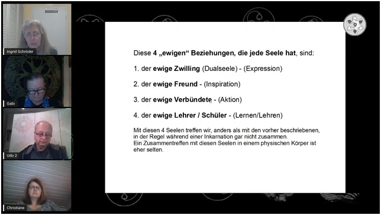
oder bei telegram: t.me/alleslebt/139
oder
Download (komprimierter) hier (neues Fenster)
Link zum Audio-Download MP3, 91 MB (neues Fenster):
perlenschnur.org/audio2/AudioVardaH3.mp3
Audio bei telegram: t.me/alleslebt/140
Dies ist die Fortsetzung der Vorstellung der Seelenlehre, die von Dr. Varda Hasselmann unter Mitwirkung von Frank Schmolke aus der kausalen Welt empfangen wurde, vorgetragen von Ingrid Schröder.
In diesem 3. Teil geht es um das Buch "Die Seelenfamilie", in welchem das Eingebunden-Sein jeder individuellen menschlichen Seele in größere Seelenverbände, in erster Linie der Seelenfamilie, geschildert wird.
Webseite Varda Hasselmann &Team:
www.septana.de
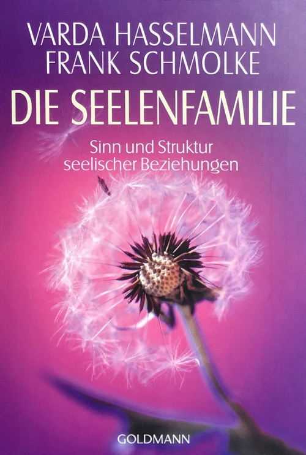
/25_25_25_25_25_25_25_25_25_25_25_25_25_25_25_25_25
|
#L24
24_24_24_24_24_24_24_24_24_24_24_24_24_24_24_24_24_24 hoch
Termin war: Donnerstag, den 10.03.2022 um 19:30 Uhr
Thema: Fortsetzung (vom 03.03.22) von Ingrid Schröder über die Seelenlehre von Frau Dr. Varda Hasselmann und Frank Schmolke
(Teil 2)
Link zum Livestream:
youtube.com/watch?v=IoGJIB1vHsU
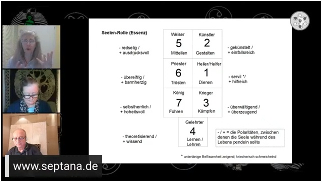
oder bei telegram: t.me/alleslebt/136
oder
Download (komprimierter) hier (neues Fenster)
Link zum Audio-Download MP3, 106 MB (neues Fenster):
perlenschnur.org/audio2/AudioVardaH2.mp3
Audio bei telegram: t.me/alleslebt/137
Dies ist die Fortsetzung der Seelenlehre, die von Dr. Varda Hasselmann unter Mitwirkung von Frank Schmolke aus der kausalen Welt empfangen wurde, vorgetragen von Ingrid Schröder. Hier wird das Buch "Archetypen der Seele" in groben Zügen vorgestellt. Es geht um das "Rüstzeug", das sich die Seele für jedes Leben aus einer begrenzten Anzahl von Elementen zusammenstellt, um damit ihre eigene Entwicklung in optimaler Weise voranzubringen. Dieses Modell der Archetypen der Seele ist ein hilfreiches Werkzeug zur Selbsterkenntnis und vielleicht noch hilfreicher für das Verständnis aller anderen Menschen und der Situationen, die wir im aktuellen Leben erleben.
Webseite Varda Hasselmann &Team:
www.septana.de
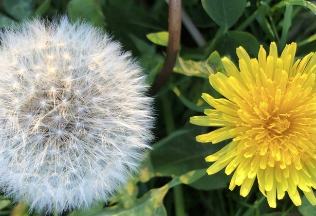
/24_24_24_24_24_24_24_24_24_24_24_24_24_24_24_24_24_24
|
#L23
23_23_23_23_23_23_23_23_23_23_23_23_23_23_23_23_23 hoch
Termin war: Donnerstag, den 03.03.2022 um 19:30 Uhr
Thema: Ingrid Schröder spricht über die Seelenlehre von Frau Dr. Varda Hasselmann und Frank Schmolke, Teil 1
Link zum Livestream:
youtube.com/watch?v=UiPFxC8r0n4
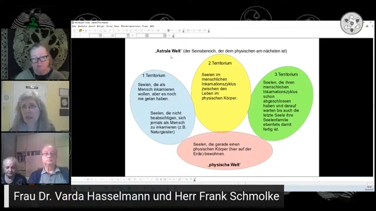
oder bei telegram: t.me/alleslebt/133
oder
Download (komprimierter) hier (neues Fenster)
Link zum Audio-Download MP3, 108 MB (neues Fenster):
perlenschnur.org/audio2/AudioVardaH1.mp3
Audio bei telegram: t.me/alleslebt/134
Die aktuelle Situation, in welcher sich die Menschheit aktuell und schon seit einiger Zeit befindet, erfordert starke, selbstbewusste, in sich ruhende und zentrierte Menschen.
Es gibt viele Werkzeuge und Methoden, dies für sich selbst zu erreichen. Eine davon wollen wir mit einigen Sendungen unseres Vereins vorstellen: Die "Seelenlehre", welche von Frau Dr. Varda Hasselmann in Zusammenarbeit mit Frank Schmolke seit Mitte der 1980-er-Jahre von Wesenheiten aus der kausalen Welt empfangen und in Buchform der Öffentlichkeit zugängig gemacht wurde.
In der ersten Sendung, am Donnerstag, dem 3. März 2022 um 19:30 h wird Ingrid Schröder, die sich selbst seit Anfang 2006 damit beschäftigt, Allgemeines zu dieser Seelenlehre sagen, einen Überblick über die bisher erschienenen Bücher geben und das erste Buch "Welten der Seele" grob vorstellen.
Wir danken den Autoren, Frau Dr. Varda Hasselmann und Herrn Frank Schmolke, und ihren beiden Nachfolgerinnen in der diesbezüglichen Seminararbeit, Frau Benedikte Baumann und Frau Anette Pichler, für die Genehmigung dieses urheberrechtlich und markenrechtlich geschütze Material vorstellen zu dürfen.
Nähere Informationen zu dieser Seelenlehre, die Auflistung der Bücher, die Auflistung aller autorisierten Matrix-Coaches (Menschen, welche aufgrund fundierter Ausbildung in der Lage sind, für Interessierte ihre Seelenmatrix = die "Werkzeugkiste" der Seele für das aktuelle Leben, zu ermitteln) und die Seminarangebote finden Sie auf der Website septana.de
Webseite Varda Hasselmann:
www.septana.de
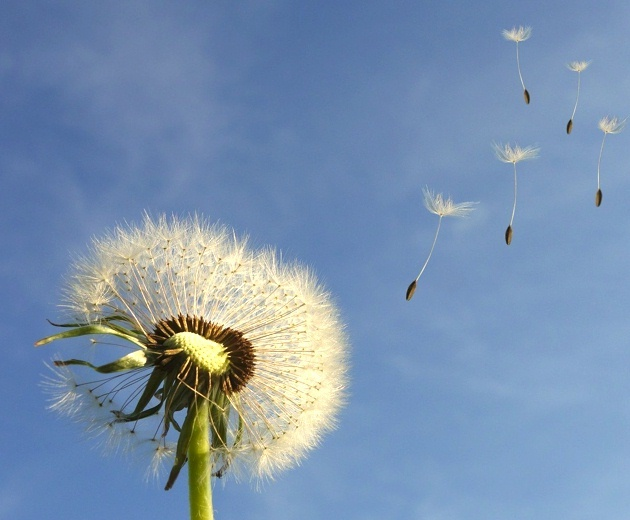
/23_23_23_23_23_23_23_23_23_23_23_23_23_23_23_23_23_23
|
#L22
/22_22_22_22_22_22_22_22_22_22_22_22_22_22_22_22_22_22 hoch
Aufnahme vom: 8.12.2021
Thema: Horst Weyrich im Gespräch mit Gabi Müller: Rund um die Merkaba-Meditation
Was ist die Merkaba?
Ist es ein Fluggerät oder ein Medbed? Ist es dasselbe wie Teleportieren, wenn man damit fliegt? Was kann man erwarten?
Link zum Video:
youtube.com/watch?v=HkyiApKcidg
oder bei telegram: t.me/alleslebt/129
oder
Download (komprimierter) hier (neues Fenster)
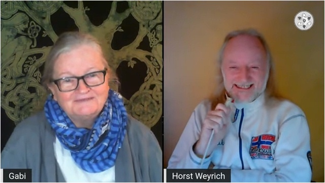
Link zum Audio-Download MP3, 86 MB (neues Fenster):
perlenschnur.org/audio1/AudioWeyrichMerkaba.mp3
Audio bei telegram: t.me/alleslebt/131
Horst Weyrich war Mer-Ka-Ba-Lehrer von 2001 bis 2014, denn die Merkaba spielt für ihn seit Jahren nur noch eine untergeordnete Rolle, außer ab und zu mal die Atemschritte 1-6 zur emotionalen Reinigung zu machen. Bitte keine Anfragen nach Seminaren stellen. Die Merkaba hat in ihrer Verbreitung ausgedient, weil sich die Zeit so beschleunigt hat, dass sich die Gedanken der Menschen auch ohne Merkaba schnell genug manifestieren/realisieren, dass sie ihre eigenen Ursprungs-Schöpfergedanken wiedererkennen können, WENN sie wollten. D.h. das Feedback-System ist heute allgegenwärtig und die Leute brauchen keine verstärkte Merkaba mehr. Es sei denn, sie wollten daraus ein Lichtschiff machen, wie derzeit Gabi Müller.
Drunvalo Melchizedek beschreibt die Merkaba-Meditation ausführlich in seinem Buch "Blume des Lebens" (2 Bände).
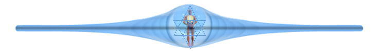
Übrigens haben wir nicht genau genug erklärt, dass ZWEI entgegengesetzte Strömungen erzeugt werden. Eine elektrische (möglicherweise aus dem Stoff der Astralwelt), ist Teil unserer nahen Aura. Und eine magnetische (Mentalweltstoff?), die noch feiner ist und schneller gedreht werden muss (per Vorstellung, Lichtgeschwindigkeit), bis beide ausgeglichen sind und eine "dynamische Null" ergeben. DAS ist der Hohlraum, der dann entsteht, und nicht mehr der Gravitation unterliegt. Da drin wird man transportiert. Ein Uboot durch Raum und Zeit. Wir sind schon im Normalzustand alle so ein Uboot, aber noch nicht flugfähig. Das Alltags-Uboot kann uns aber ein subjektives Zeitempfinden geben. Da haben wir mal das Emotionalfeld oder das Mentalfeld ausversehen ausreichend gegeneinander gestellt. Und vielleicht konnte Martijn van Staveren einfach per Merkaba in die bessere Parallelwelt wechseln (eine benachbarte Welt ohne den Unfall)? Es soll 1728 davon in unserer erreichbaren Nachbarschaft geben. Per Kairos (bei Simon) im Jetzt zu erreichen, später nicht mehr, da sind es andere, die nicht genug passen.
/22_22_22_22_22_22_22_22_22_22_22_22_22_22_22_22_22_22
|
#L21
21_21_21_21_21_21_21_21_21_21_21_21_21_21_21_21_21_21 hoch
Aufnahme vom: 7.12.2021
Thema: Chris im Gespräch mit Gabi Müller über brennendes Wasser und flitzende Anu
Chris, ein freier Geist auf der Suche nach Antworten des Daseins, sei es FE oder das überwinden von Ego.
Link zum Video:
youtube.com/watch?v=HewE4zXVtBU
oder bei telegram: t.me/alleslebt/126
oder
Download (komprimierter) hier (neues Fenster)
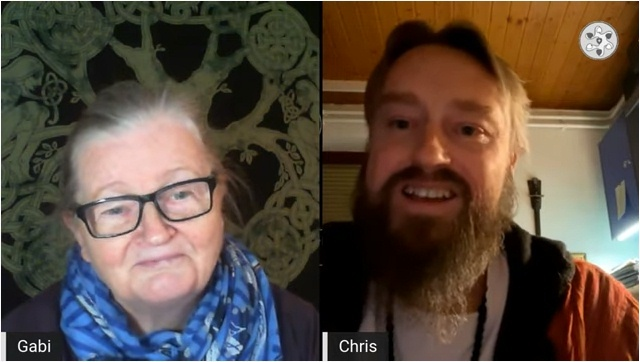
Link zum Audio-Download MP3, 77 MB (neues Fenster):
perlenschnur.org/audio1/AudioChris.mp3
Audio bei telegram: t.me/alleslebt/128
HHO-Zelle
de.wikipedia.org/wiki/Wasserelektrolyse
Lime-Light (Kalklicht)
de.wikipedia.org/wiki/Drummondsches_Licht
Kontakt:
discovery@theonepath.io
theonepath.io
Weiteres Video mit/von Chris:
theonepath.io/the-one-path-wasser-zu-methan
/21_21_21_21_21_21_21_21_21_21_21_21_21_21_21_21_21_21
|
#L20
20_20_20_20_20_20_20_20_20_20_20_20_20_20_20_20_20_20 hoch
Aufnahme vom: 2.12.2021
Thema: Volker von Schintling-Horny im Gespräch mit Gabi Müller: Steinkreise und Bienen-Siebensterne
Himmels- und Erd-Energien zusammenbringen mit großen Megalith-Kreisen oder kleinen Kieselstein-Kreisen. Waren das Funkfeuer und Magnetschwebebahnen?
Waren Steinsärge oder Hünengräber so etwas wie große Lasergeräte?
Link zum Video:
youtube.com/watch?v=KP2NvhZWqM0
oder bei telegram: t.me/alleslebt/122
oder
Download (komprimierter) hier (neues Fenster)
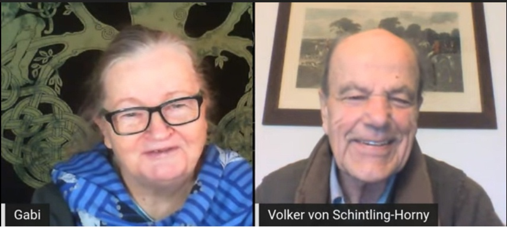
Link zum Audio-Download MP3, 86 MB (neues Fenster):
perlenschnur.org/audio1/AudioSchintling.mp3
Audio bei telegram: t.me/alleslebt/125
Webseite von Volker von Schintling-Horny
www.schintlinghorny.de
/20_20_20_20_20_20_20_20_20_20_20_20_20_20_20_20_20_20
|
#L19
19_19_19_19_19_19_19_19_19_19_19_19_19_19_19_19_19_19 hoch
Termin war: Donnerstag, 21.10.2021, 19 Uhr
Referenten: Ingrid Schröder und Christiane Wiemann
Thema: Aktuelle Situation im Lichte Vedischer Astrologie und Meditation mit Christiane Wiemann
Zur Unterstützung einer positiven Nutzung dieser kosmischen/göttlichen Kräfte bietet Christiane Wiemann im Anschluss eine meditative Einstimmung dazu an. Hierbei soll ein Erlebnisraum geöffnet werden, mittels dem jeder seine inneren Strömungen positiv nutzen kann. Dieser Vorgang ist unabhängig von Zeit und Raum und wirkt somit auch noch, wenn die Aufzeichnung des Livestream zu einem späteren Zeitpunkt angehört/angeschaut wird.
Link zum Youtube-Livestream:
youtube.com/watch?v=SAXheg9RdPw
oder bei telegram: t.me/alleslebt/115
oder
Download (komprimierter) hier (neues Fenster)
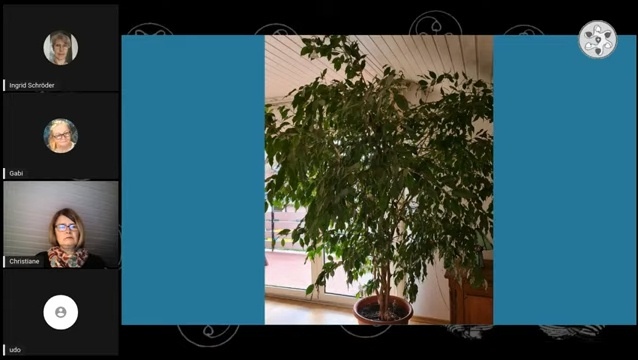
Link zum Audio-Download MP3, 47 MB (neues Fenster):
perlenschnur.org/audio1/VedAstrolMedit1.mp3
oder bei t.me/alleslebt/114
Aktuelle Situation im Lichte Vedischer Astrologie und Meditation
mit Christiane Wiemann
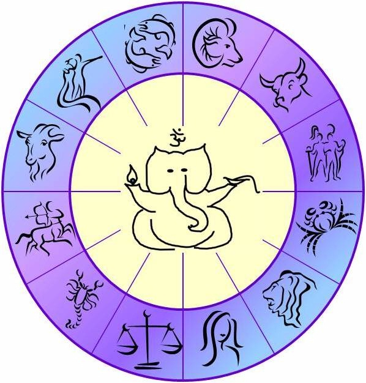
Webseite von Ingrid Schröder:
www.isis-schule.de
/19_19_19_19_19_19_19_19_19_19_19_19_19_19_19_19_19_19
|
#L18
18_18_18_18_18_18_18_18_18_18_18_18_18_18_18_18_18_18 hoch
Termin war: Mittwoch 28.07.2021
Thema: VP mit Burkhard Koller: Wasser und Bewusstsein (bearbeitet)
Teilnehmer waren: Ingrid Schröder, Gabi Müller, Christiane Wiemann, Burkhard Koller, Christina Ahlgrimm
Burkhard Koller, Wasserforscher- und Bewusstseins-Mentor:
Wenn Du feststellst, dass Dein Leben nicht das ist wonach Du Dich sehnst, kannst Du es in jedem Moment verändern, indem Du Dein Bewusstsein veränderst!
Mach es leer und fülle es neu!
Link zum Video:
youtube.com/watch?v=JphJ76OWPMA
oder bei telegram: t.me/alleslebt/87
oder
Download (komprimierter) hier (neues Fenster)
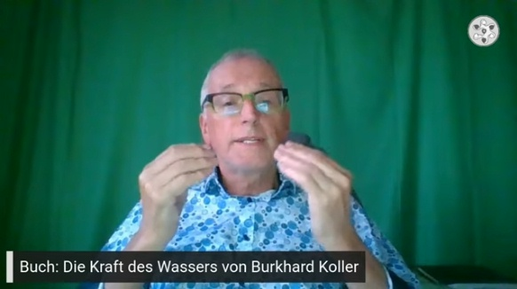
Link zum Audio-Download MP3, 107 MB (neues Fenster):
perlenschnur.org/audio1/LiveWasser1bearb.mp3
Webseite von Burkhard Koller
www.burkhardkoller.de/
/18_18_18_18_18_18_18_18_18_18_18_18_18_18_18_18_18_18
|
#L17
17_17_17_17_17_17_17_17_17_17_17_17_17_17_17_17_17_17 hoch
Termin war: Donnerstag 29.07.2021
Referent: Ingrid Schröder
Teilnehmer waren: Ingrid Schröder, Gabi Müller, Christiane Wiemann, Udo Sobiech, Christina Ahlgrimm
Thema: Vedisch-Astrologische Erklärungsansätze zur aktuellen Situation, persönlich und allgemein
Link zum Youtube-Livestream:
youtube.com/watch?v=RkQCA58Lt4w
Aktuelle Situation im Lichte Vedischer Astrologie
oder bei telegram: t.me/alleslebt/82
oder
Download (komprimierter) hier (neues Fenster)
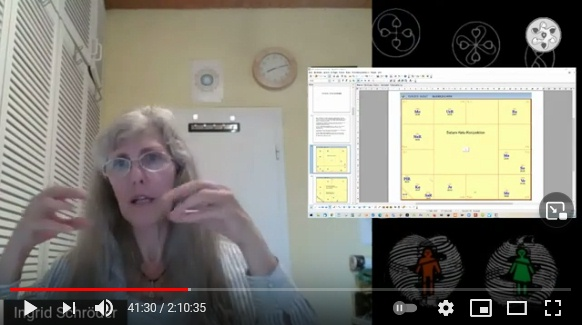
Link zum Audio-Download MP3, 125 MB (neues Fenster):
perlenschnur.org/audio1/Live_Astrol.mp3
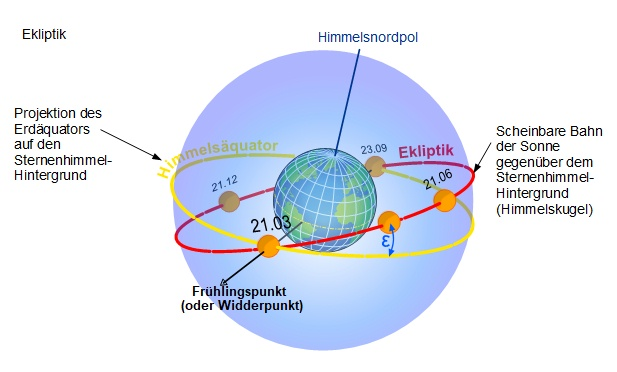
Webseite von Ingrid Schröder:
www.isis-schule.de
/17_17_17_17_17_17_17_17_17_17_17_17_17_17_17_17_17_17
|
#L16
16_16_16_16_16_16_16_16_16_16_16_16_16_16_16_16_16_16 hoch
Termin war: Dienstag 27.04.2021
Thema: Mystik heiratet Physik #6, bearbeitet
Ergänzungen und Vertiefungen, speziell von Teil #3
Folgender Text von Gabi Müller wurde besprochen:
vivavortex.wordpress.com/2021/04/21/der-verdrillungs-takt/
Der Verdrillungs-Takt
Der Text liegt auch vorgelesen vor. Das Vorgelesene wurde bei der Bearbeitung angehängt.
Hier einzeln online (z.Z. nicht gelistet; bitte Diskussion (unten verlinkt) zuerst hören)
Teilnehmer waren: Gabi Müller, Christiane Wiemann, Christina Ahlgrimm, Uwe Kollitz, Udo Sobiech
Link zum Video (besprochener Text als Lesung direkt angehängt):
youtube.com/watch?v=kfFIJDRbMso
oder bei telegram: t.me/alleslebt/72
oder
Download (komprimierter) hier (neues Fenster)
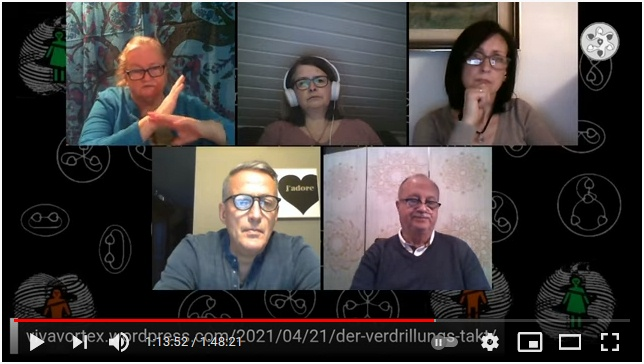
Link zum Audio-Download MP3, 106 MB (neues Fenster):
perlenschnur.org/audio1/LiveMyPhy6.mp3
Das ist der 5. Folgetermin zu L6
Weitere Links
Animation zur Sonnenblume (im Video angesprochen):
youtube.com/watch?v=kkGeOWYOFoA
Goldener Schnitt-Winkel in den Pflanzen:
torkado.de/pflanzen.htm
Webseite von Gabi Müller
viva-vortex.de
/16_16_16_16_16_16_16_16_16_16_16_16_16_16_16_16_16
|
#L15
15_15_15_15_15_15_15_15_15_15_15_15_15_15_15_15_15 hoch
Termin war: Donnerstag 08.04.2021
Gäste: Uwe Kollitz und Christina Ahlgrimm
Thema: Entgiftung Teil 1
Link zum Youtube-Livestream:
youtube.com/watch?v=Wi7GwcGRsbI
oder bei telegram: t.me/alleslebt/66
oder
Download (komprimierter) hier (neues Fenster)
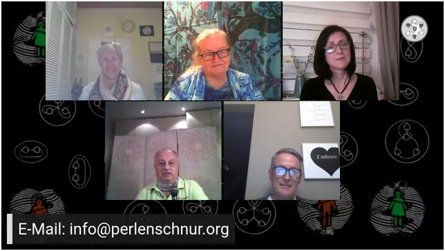
Link zum Audio-Download MP3, 87 MB (neues Fenster):
perlenschnur.org/audio1/PodcastLiveEntgiftung1.mp3
/15_15_15_15_15_15_15_15_15_15_15_15_15_15_15_15_15
|
#L14
14_14_14_14_14_14_14_14_14_14_14_14_14_14_14_14_14 hoch
Termin: Mittwoch 31.03.2021, 19:30 Uhr
Gast: Uwe Kollitz
Thema: Das Torus-Universum. Altes und Neues Wissen.
Link zum Youtube-Livestream:
youtube.com/watch?v=AjqWhoeRJ2M
oder bei telegram: t.me/alleslebt/62
oder
Download (komprimierter) hier (neues Fenster)
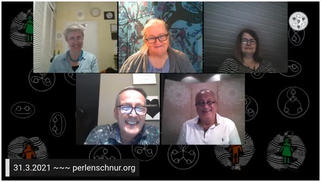
Link zum Audio-Download MP3, 100 MB (neues Fenster):
perlenschnur.org/audio1/PodcastKollitzAltesWissen.mp3
Link zum Vorgespräch am 30.3.21:
youtube.com/watch?v=OM2veNZf4DQ
oder bei telegram: t.me/alleslebt/59
oder
Download (komprimierter) hier (neues Fenster)
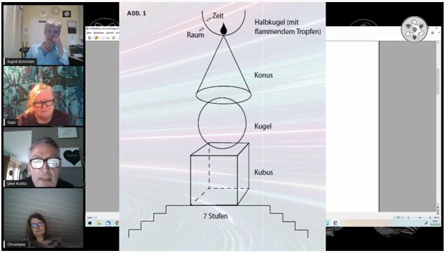
Link zum Vorgespräch-Audio-Download MP3, 72 MB (neues Fenster):
perlenschnur.org/audio1/PodcastKollitzVorgespraech.mp3
Interviews bei NeueHorizonte.tv
Ur-Plopp statt Urknall? Teil 1 und 2
youtube.com/watch?v=xGHhWF2vzps
youtube.com/watch?v=eL0gwH-etNs
Artikel aus Zeitschrift raum&zeit:
2021/ausgabe-230/das-torus-universum-altes-wissen-neues-wissen
Kontakt zu Uwe Kollitz: uwe.kollitz@gmx.net
/14_14_14_14_14_14_14_14_14_14_14_14_14_14_14_14_14
|
#L13
13_13_13_13_13_13_13_13_13_13_13_13_13_13_13_13_13 hoch
Termin war: Donnerstag 26.03.2021
Thema: Frithjofs Wirbel-Würze #2
Link zum Youtube-Livestream:
youtube.com/watch?v=u5qUdOEsKSE
oder bei telegram: t.me/alleslebt/56
oder
Download (komprimierter) hier (neues Fenster)
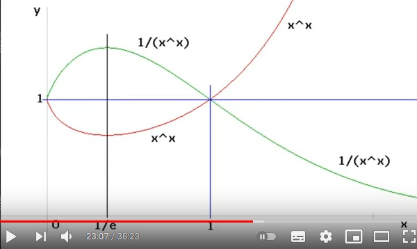
Link zum Audio-Download MP3, 37 MB (neues Fenster):
perlenschnur.org/audio1/TonWuerze2.mp3
Die Mühlen, sie drehen und drehen ... alle gleich ?
Bekannt: lim (1+1/n)^n = e
Es folgt aus lim [(x^x) / ((x-1)^(x-1)) / (x-0.5)] = e = Eulersche Zahl
lim (1+1/n)^(n+0,5) = e schneller konvergent
Nach Keller und Frithjof Michael Müller
Analoges für die exp-Funktion
http://www.torkado.de/progs/scripte/zhz_e0.htm
GSF - der Goldene-Schnitt-Filter
/13_13_13_13_13_13_13_13_13_13_13_13_13_13_13_13_13
|
#L12
12_12_12_12_12_12_12_12_12_12_12_12_12_12_12_12_12 hoch
Termin war: Mittwoch 25.03.2021
Thema: Frithjofs Wirbel-Würze #1
Beginn einer Serie aus kurzen Stücken für elektronisch-technisch-physikalisch-alternative Wirbeldenker, nur für Interessierte. Könnte eine Vertiefung der MyPhy-Serie sein, muss es aber nicht, wir werden sehen.
Link zum Youtube-Livestream:
youtube.com/watch?v=jhc7tlvWUoI
oder bei telegram: t.me/alleslebt/53
oder
Download (komprimierter) hier (neues Fenster)
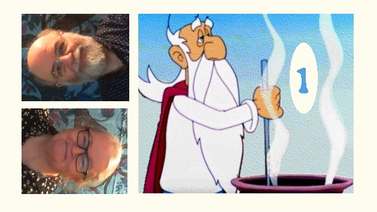
Link zum Audio-Download MP3, 44 MB (neues Fenster):
perlenschnur.org/audio1/TonWuerze1.mp3
/12_12_12_12_12_12_12_12_12_12_12_12_12_12_12_12_12
|
#L11
11_11_11_11_11_11_11_11_11_11_11_11_11_11_11_11_11 hoch
Termin war: Mittwoch 10.03.2021
Thema: Mystik heiratet Physik #5
Ergänzungen zu Teil #4
Alle Quanten sind lebendige Perlen im Netz aus 3er-Gruppen von gekreuzten Strömungen
Landen Perlen im Netz oder wachsen Perlenschnur-Netze aus Perlen?
(Bitte Perlenschnur mit Wirbelschnur übersetzen)
Teilnehmer waren: Gabi Müller, Ingrid Schröder (Moderatorin), Christina Ahlgrimm, Udo und Gabriele Sobiech
Link zum Youtube-Livestream:
youtube.com/watch?v=2tOSEECPHLw
oder bei telegram: t.me/alleslebt/50
oder
Download (komprimierter) hier (neues Fenster)
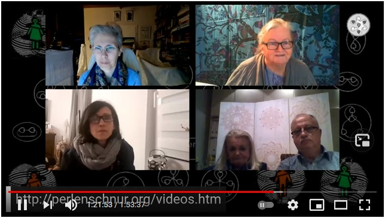
Link zum Audio-Download MP3, 106 MB (neues Fenster):
perlenschnur.org/audio1/PodcMyPhy5.mp3
Das ist der 4. Folgetermin zu L6
Webseite von Gabi Müller
viva-vortex.de
Das empfohlene Video, wegen den alten großen Gebäuden:
youtube.com/watch?v=UpNX45HRD1g
/11_11_11_11_11_11_11_11_11_11_11_11_11_11_11_11_11
|
#L10
101010101010101010101010101010101010101010101010 hoch
Termin war: Mittwoch 03.03.2021, 19:30 Uhr
Thema: Mystik heiratet Physik #4
Ergänzungen und Vertiefungen der Teile #1 bis #3
Teilnehmer waren: Gabi Müller, Ingrid Schröder (Moderatorin), Udo Sobiech und Peter Berg
Link zum Youtube-Livestream:
youtube.com/watch?v=IiigmJ6O9fo
oder bei telegram: t.me/alleslebt/44
oder
Download (komprimierter) hier (neues Fenster)
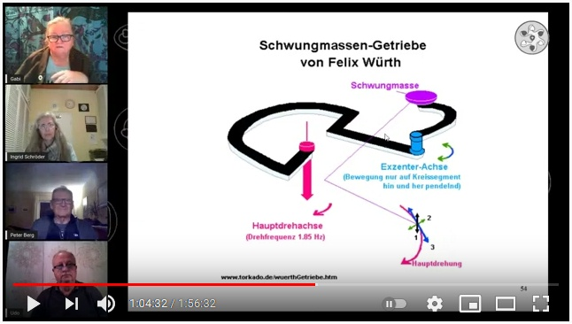
Link zum Audio-Download MP3, 106 MB (neues Fenster):
perlenschnur.org/audio1/LiveMyPhy4.mp3
Das ist der 3. Folgetermin zu L6
Webseite von Gabi Müller
viva-vortex.de
/101010101010101010101010101010101010101010101010
|
#L9
99999999999999999999999999999999999999999999999 hoch
Termin war: Mittwoch 24.02.2021, 19:30 Uhr
Themen-Gast: Christine Kempynck und Andreas Körber
weitere Teilnehmer waren: Christa Jasinski, Udo und Gabriele Sobiech, Christiane Wiemann,
und wie immer Ingrid Schröder (Moderatorin) und Gabi Müller
Thema: Der Dialog nach Bohm und anderen
David Bohm (1917-1992) war Quantenphysiker und Philosoph. Für ihn, als Quantenphysiker, war die Welt auf atomarer Ebene ein untrennbares Netz, ein Miteinander verwobener Zusammenhänge. Er war der Meinung, dass der Mensch meist nur schon Gedachtes denkt und somit selten fähig ist, Neues zu denken. Ihm wurde klar, dass das Denken nicht nur eine rationale Ebene umfasst, sondern u. a. auch durch Gefühle, Wünsche, Absichten, Unterstellungen und Ängste beeinflusst wird. "Wir sind so daran gewöhnt, das Denken als selbstverständlich hinzunehmen, dass wir es überhaupt nicht beachten."
"Haben Sie schon mal erlebt, wie Ihnen plötzlich neue Gedanken oder Ideen duch den Kopf schießen, wenn Sie sich selbst vergessend in ein Gespräch eintauchen oder Ihnen etwas wie Schuppen von den Augen fällt?" Genau diese "Impulse" wollte Bohm durch den Dialog bewusst hervorrufen und "aus dem Käfig des Gedachten in den Kosmos des gemeinsames Denkens" kommen.
Der Dialog nach Bohm und andere ist eine Haltung des Austausch, des Seins. Als „Leitfaden“ werden die zehn dialogische Kompetenzen genannt. Diese Kompetenzen und ebenfalls der dialogische Kreis werden vorgestellt.
Ergänzung
Eine gute Frage:
"ist die Aussage - "ich fühle mich verletzt" - auch dialogisch? Es
könnte meinen Gegenüber verletzen".
Ja, es ist dialogisch und ja, es könnte meinen Gegenüber verletzen.
Es ist ein typischer Fall "der Doppelresonnanz" und eine gute gemeinsame Übung der eigenen dialogischen Fähigkeit.
Dass ich mich verletzt fühle, hat nicht mit der Person gegenüber zu tun, sondern mit dem Eindruck, dass das Gesagte bei mir hinterlässt. Wichtig ist in diesem Fall, dass die Benennung und Beschreibung meines Fühlens aus meiner inneren Wunsch kommt, ohne Hintergrundgedanke, aus dem tiefen inneren Bedürfnis des Mitteilens heraus zu äußern. Wenn dieses innere Bedürfnis nicht da ist, dann ist Schweigen eventuel der bessere Weg. Gemeinsam zu erkunden, wenn beide es möchten, was mich da in dem Moment so "angesprochen hat", ist dann die dialogische Übung. Es entsteht durch das Leben der dialogischen Fähigkeiten, einen Raum des gemeinsam Erkundens.
Die dialogischen Fähigkeiten können mir erlauben, meinen eigenen Eigenwelt :) im Austausch, im Durch-Einander zu erleben, zu fühlen.
DIA-LOG
Link zum Youtube-Livestream:
youtube.com/watch?v=Jbrf7l60cAw
oder bei telegram: t.me/alleslebt/41
oder
Download (komprimierter) hier (neues Fenster)
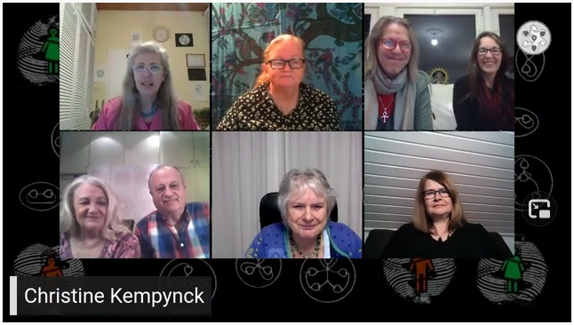
Link zum Audio-Download MP3, 118 MB (neues Fenster):
perlenschnur.org/audio1/LiveKempynck24Feb2021.mp3
Dialog-Leitfaden (10 Punkte) zum Herunterladen:
Dialog_in_Dialog_Leitfaden.pdf
/99999999999999999999999999999999999999999999999
|
#L8
88888888888888888888888888888888888888888888888 hoch
Termin war: Donnerstag 18.02.2021, 19:30 Uhr
Thema: Mystik heiratet Physik #3
Einführung in die Okkulte Chemie, interpretiert mit dem Wirbelblick
Teilnehmer waren: Gabi Müller, Ingrid Schröder (Moderatorin), Udo und Gabriele Sobiech, Christiane Wiemann, sowie Christa Jasinski
Link zum Youtube-Livestream:
youtube.com/watch?v=O7Rj7Xaz8j0
oder bei telegram: t.me/alleslebt/38
oder
Download (komprimierter) hier (neues Fenster)
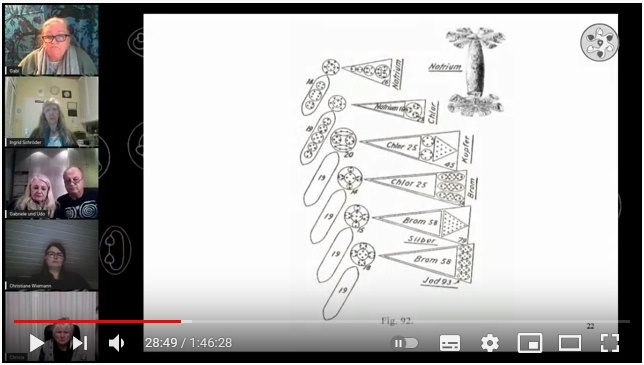
Link zum Audio-Download MP3, 103 MB (neues Fenster):
perlenschnur.org/audio1/LiveMyPhy3.mp3
Das ist der zweite Folgetermin zu L6
Link zu einer deutschen Version der Okkulten Chemie:
(automatisch übersetzt)
perlenschnur.org/SucheOC
(Bitte Firefox nehmen, da sind die Bilder in der Anzeige nicht verzerrt)
Webseite von Gabi Müller
viva-vortex.de
/88888888888888888888888888888888888888888888888
|
#L7
77777777777777777777777777777777777777777777777 hoch
Termin war: Mittwoch 17.02.2021, 19:30 Uhr
Thema: Mystik heiratet Physik #2
Was ist ein Torkado oder eine Torkada und wo finden wir sie?
Welchen Nutzen hat der Wirbelblick?
Teilnehmer waren: Gabi Müller, Ingrid Schröder (Moderatorin), Udo und Gabriele Sobiech, Christiane Wiemann, und Christina Ahlgrimm
Link zum Youtube-Livestream:
neues Link, wegen technischer Panne:
youtube.com/watch?v=S30qllUI7n4
oder bei telegram: t.me/alleslebt/35
oder
Download (komprimierter) hier (neues Fenster)
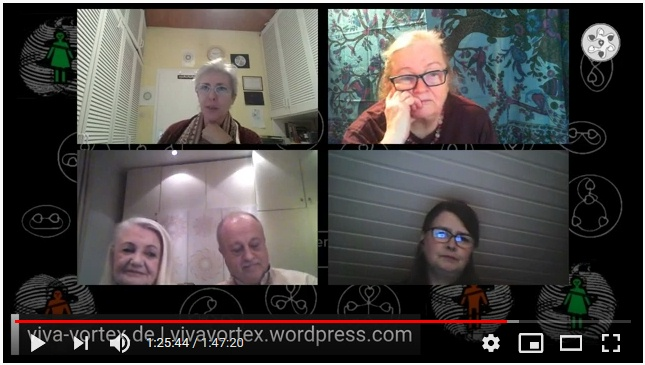
Link zum Audio-Download MP3, 103 MB (neues Fenster):
perlenschnur.org/audio1/LiveMyPhy2.mp3
Das ist der erste Folgetermin zu L6
empfohlene Links zur Ergänzung:
www.alexgrey.com
Alex Grey bei pinterest.de
Ab Mitte Tonsorte Zwei:
Elektrosmog im Vergleich zur elektromagnetischen Stimme der Natur (Sferics) hörbar gemacht.
Webseite von Gabi Müller
viva-vortex.de
/77777777777777777777777777777777777777777777777
|
#L6
66666666666666666666666666666666666666666666666 hoch
Termin war: Mittwoch 10.02.2021, 19:30 Uhr
Thema: Mystik heiratet Physik #1
Das Leben hält Einzug in die Physik
Ein Visionäre-Treff in Folge, auf der Grundlage des möglichen Wirbel-Weltbildes.
Teilnehmer waren: Gabi Müller, Ingrid Schröder (Moderatorin), Christiane Wiemann, Udo und Gabriele Sobiech
Link zum Youtube-Livestream (bearbeitete Version):
youtube.com/watch?v=9sap9YFKsiY oder
Original(langatmiger)
oder bei telegram: t.me/alleslebt/31
oder
Download (komprimierter) hier (neues Fenster)
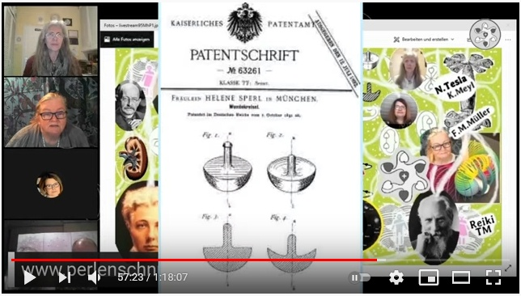
Link zum Audio-Download der bearbeiteten Version, MP3, 75 MB (neues Fenster):
perlenschnur.org/audio1/MystikPhysik1Ton.mp3
Folgender Text (in Fettschrift) soll Themengrundlage für viele Sendungen dieser Folge sein. Wir werden jedesmal mehr in die Tiefe gehen. Bitte nicht vergessen, dass Beweise im Sinne der Physik nur dann erbracht und anerkannt sind, wenn anerkannte Physiker das Thema überhaupt schon untersucht und in Fachjournalen veröffentlicht haben, was sehr selten passiert für Themen wie Feinstofflichkeit oder Bewusstsein.
Es geht hier um Anregungen für eine Erweiterung der Physik, basierend auf überliefertem alten Wissen und Beobachtungen aus den letzten 120 Jahren.
Hypothesen und Grundaussagen:
Ausgehend von den sichtbaren natürlichen Wirbelformen, im Kleinen und im Großen, sehen wir die Wirbel immer mehr in uns, auch in der Gesellschaft. Und zwar deshalb, weil alles Höhere feiner, beweglicher und schneller ist. Auch das Geistige ist eine Welt. Jede der Welten besteht ausschließlich aus Wirbeln, die sich zusammenschließen können, dabei hierarchisch größer werden, jeweils ihr Inneres leerpumpen, was eine neue, gröbere Materie-Skala eröffnet, in die feinerer Hintergrund einströmen muss. Jede gröbere Welt ist nur ein neues Kondesat, das innerlich gefüllt wird mit nachströmendem Feineren. Denn der dynamisch gepumpte Wirbel-Hohlraum im Kern bedeutet ständiger Sog, der Ströme wie auf Schnüren anzieht und so ordnet sich die Welt.
Den Sog nennen wir Masse.
Den Kern nennen wir Herz.
Die Wirbelströmung nennen wir Aura oder Biofeld.
Und ein Tornado ist nur ein ionisiertes "Teilchen" in Groß.
Genauso sind Gedanken, Gefühle, Atome, Moleküle, Gene, Zellen, Organe, Lebewesen, Planeten oder Galaxien auch neue "Teilchen" mit Subteilchen, die alle eigentlich quantisierte Wirbel sind.
Alles lebt. Denn alles wirbelt, ineinander verschachtelt. Wir versuchen, die große Ordnung im Hintergrund zu sehen. Es geht uns um die dynamischen Zahnräder des Weltengetriebes.
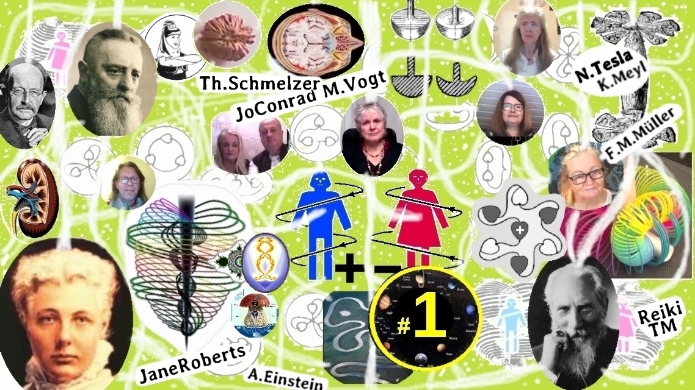
Wimmelbild: oben links Physiker Max Planck und Förster Viktor Schauberger
unten links Annie Besant und rechts Charles Webster Leadbeater, Autoren von "Okkulte Chemie"
Webseiten von Gabi Müller
viva-vortex.de
torkado.de (älter, teilweise überholt)
/66666666666666666666666666666666666666666666666
|
#L5
55555555555555555555555555555555555555555555555 hoch
Termin war: Donnerstag 04.02.2021, 19:30 Uhr
Gast: Helmut Pilhar
weitere Teilnehmer waren: Christiane Wiemann, Christa Jasinski, Udo und Gabriele Sobiech, Ina H., Christina Ahlgrimm,
und wie immer Ingrid Schröder (Moderatorin) und Gabi Müller
Teil 2, Folgetermin zu L1
Es werden neue weitergehende Fragen zur Germanischen Heilkunde nach Dr.R.G.Hamer beantwortet bzw. diskutiert.
Link zum Youtube-Livestream:
youtube.com/watch?v=mN8Ahzq2y7w
oder bei telegram: t.me/alleslebt/25
oder
Download (komprimierter) hier (neues Fenster)
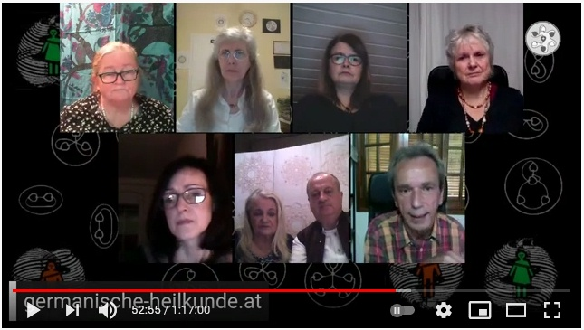
Link zum Audio-Download der Langfassung, MP3, 74 MB (neues Fenster):
perlenschnur.org/audio1/LivePilhar4Feb2021.mp3
Allgemein GNM:
Germanische Heilkunde
Sonderprogramme allgemein
Links zum Bücherkauf:
amici-di-dirk.com
Neues Video bei: SAM SOUL AND MIND: youtube.com/watch?v=sXjqtT7om2I
SAM & Klemens im Gespräch Teil 1 - Germanische Heilkunde für Einsteiger
/5555555555555555555555555555555555555555555555
|
#L4
44444444444444444444444444444444444444444444444 hoch
Termin war: Donnerstag 28.01.2021, 19:30 Uhr
Themen-Gast: Christa Jasinski
weitere Teilnehmer waren: Udo und Gabriele Sobiech, Christiane Wiemann
und wie immer Ingrid Schröder (Moderatorin) und Gabi Müller
VP mit Christa Jasinski über Seele, Geist und all dem außergewöhnlichen Rest
Christa Jasinski ist die Herausgeberin der 9-teiligen Thalus-Reihe (und Autorin von "Äonen und Archonten"). Die Thalus-Bücher stellen die Tagebücher ihres verstorbenen Mannes Alf Jasinski dar, der 10 Jahre lang regelmäßig (z.B. acht mal monatlich) nach Innererde einfahren durfte und von dort den Auftrag hatte, darüber zu schreiben, damit "Obererde" (das sind wir) die Wahrheit erfährt. Innererde ist nicht das Höhlensystem (das gibt es auch), sondern eine Landschaft auf der inneren Oberfläche des Erd-Torus, mit einer Plasma-Sonne, Kontinenten, Meeren und Menschen verschiedener Rassen.
Heute geht es aber nicht vordergründig um Innererde (siehe Vorträge bei uns aus 2018 und 2019). Christa schreibt an weiteren Büchern, über die wir uns auch unterhalten können. Sie hat großes kosmisches Wissen und eine natürliche Verankerung im Geiste der ursprünglichen Menschheit.
Link zum Youtube-Livestream:
youtube.com/watch?v=ZJYERpmmd5g
oder bei telegram: t.me/alleslebt/22
oder
Download (komprimierter) hier (neues Fenster)
oder als MKV
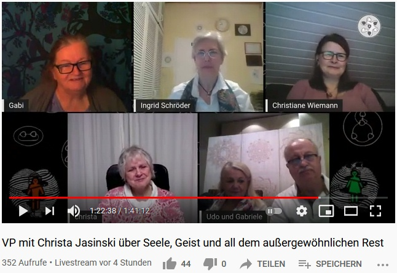
Link zum Audio-Download, MP3, 95 MB (neues Fenster):
perlenschnur.org/audio1/LiveJasinski28Jan2021.mp3
Webseite von Christa Jasinski
christa-jasinski.de
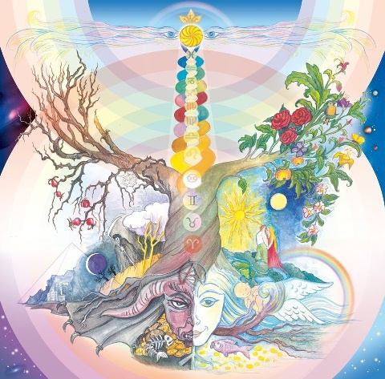
Verlag
GartenWEden-Verlag
Volltextsuche in allen 9 Bänden der Thalus-Reihe
Suche in Thalus-Reihe
Bücher, über die gesprochen wurde:
Christa Jasinski: Äonen und Archonten
C.W. Leadbeater/A.Besant: Occulte Chemie
Varda Hasselmann: Archetypen der Seele
Penny McLean: Gestorben ist noch lange nicht tot /Was uns wirklich im Jenseits erwartet
weitere Links für Volltextsuche:
Suche in Occulte Chemie
Suche in Viva Vortex
/44444444444444444444444444444444444444444444444
|
#L3
33333333333333333333333333333333333333333333333 hoch
Termin war: Mittwoch 27.01.2021, 19:30 Uhr
Themen-Gast: Andreas Körber
weitere Teilnehmer waren: Stephan Müller, Udo und Gabriele Sobiech, Christiane Wiemann,
und wie immer Ingrid Schröder (Moderatorin) und Gabi Müller
Quanten-Atmung - Live ausprobieren mit Andreas Körber und Stephan Müller
"Von Zeit zu Zeit brauch' ich 'nen langen Atem"...
Was ist die Quanten-Atmung und was kann sie bewirken?
Andreas und Stephan von der 96Hz-Genossenschaft bieten Dir eine leicht verständliche und praktische Live-Einführung in diese Atemtechnik.
Ihre neu entwickelte App „QAPT“ (Quanten Atmung Primärzeit Takt) macht das 21 Tage-Training sehr einfach umsetzbar in Deinem Unterbewusstsein zu etabliern, um schlussendlich unabhängig von technischen Hilfsmitteln in wenigen Sekunden im Hier & Jetzt zu landen.
Diese Quanten-Atmung ist für all diejenigen, die zur Zeit bzw. zur Unzeit einen langen Atem brauchen.
Bitte verbreite diesen Live-Videostream in deinen sozialen Netzwerken.
Link zum Youtube-Livestream:
youtube.com/watch?v=WC4Vc6VP5BA
oder bei telegram: t.me/alleslebt/19
oder
Download (komprimierter) hier (neues Fenster)
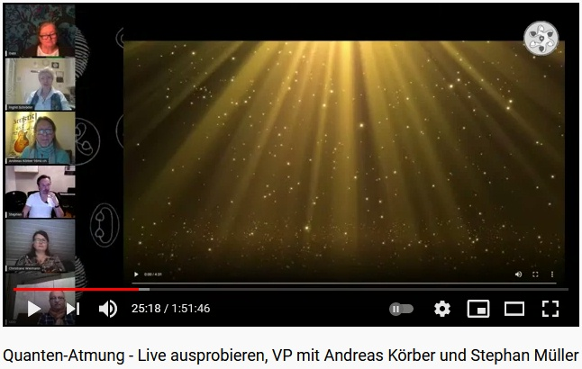
Link zum Audio-Download, MP3, 107 MB (neues Fenster):
perlenschnur.org/audio1/LiveKoerber27Jan2021.mp3
Es wird einen Chat geben für Fragen und Kommentare während des Livestreams, die entweder direkt oder eventuell in späteren Sendungen behandelt werden.
Webseite von Andreas Körber
wortkraftschwingung.net
Youtube-Kanal von Andreas Körber
youtube.com/c/AndreasK%C3%B6rberUBUNTU/featured
Wingmakers ab 1:03:00 Quantenpause:
SquU73eR0hg Wingmakers
1:4:30 Atem
/33333333333333333333333333333333333333333333333
|
#L2
22222222222222222222222222222222222222222222222 hoch
Termin war: Donnerstag 21.01.2021, 19:30 Uhr
Gast: Simon Below
weitere Teilnehmer waren: Christa Jasinski, Andreas Körber, Udo und Gabriele Sobiech
und wie immer Ingrid Schröder (Moderatorin) und Gabi Müller
Simon Below ist Pädagoge, Seminarleiter und Autor des Buches „Das kinderfressende System“.
Uns geht es um die Frage, wie wir die aktuelle Situation für unsere eigene Entwicklung konstruktiv nutzen können. Er geht davon aus (u.a. nach Sergej Lazarev), dass wir immer die logische Konsequenz unseres eigenen Verhaltens erleben. Darüber wollen wir mit ihm diskutieren und hoffen für uns und die Zuschauer, viel daraus zu lernen. Auch für die verschachtelte Wirbel-Welt.
Link zum Youtube-Livestream, 2h 06 min:
youtube.com/watch?v=zi0RybrEZCY
oder bei telegram: t.me/alleslebt/15
oder
Download (komprimierter) hier (neues Fenster)
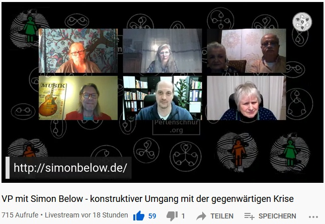
Link zum Audio-Download, MP3, 121 MB (neues Fenster):
perlenschnur.org/audio1/LiveBelow21Jan2021.mp3
Es wird einen Chat geben für Fragen und Kommentare während des Livestreams, die entweder direkt oder eventuell in späteren Sendungen behandelt werden.
Wer sich vorbereiten will:
Youtube-Kanal von Simon Below
youtube.com/channel/UC_mxGvvOt2rGHV8tkWO4tYw
Webseite von Simon Below
simonbelow.de
/22222222222222222222222222222222222222222222222
|
#L1
111111111111111111111111111111111111111111111111111111 hoch
Termin war: Mittwoch 13.01.2021, 19:30 Uhr
Gast: Ing. Helmut Pilhar
weitere Teilnehmer waren: Christa Jasinski, Andreas Körber, Christiane Wiemann, Udo und Gabriele Sobiech
und wie immer Ingrid Schröder und Gabi Müller als Moderatoren
Den Beginn unserer Livestream-Serie macht eine Sendung mit Ing. Helmut Pilhar, der mit uns darüber reden wird, welche Folgen die Angstszenarien des letzten Jahres auf unsere körperliche Gesundheit haben können, auf Grundlage der Germanische Medizin nach Dr.R.G. Hamer, und wie damit konstruktiv umzugehen ist. Im Sinne der Wirbelphysik sind die von Hamer entdeckten DHS (Hamersche Herde/Dirk-Hamer-Syndrom) und ihre Organverbindung natürlich als energetisches Wirbelsystem zu verstehen.
Link zum Youtube-Livestream, 2h 19 min:
youtube.com/watch?v=zxx6h4EcYqA
oder bei telegram: t.me/alleslebt/4
oder Download (komprimierter) hier (neues Fenster)
oder als MKV
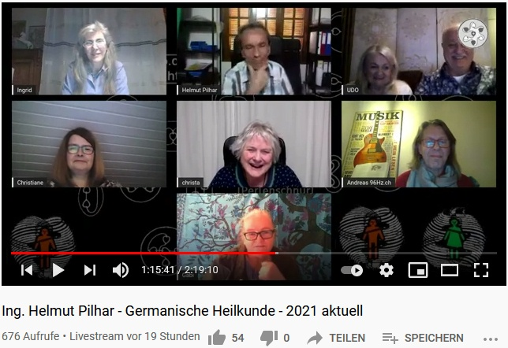
Link zur verkürzten Version (58 min):
youtube.com/watch?v=x3iluy0ltAI
oder bei telegram: t.me/alleslebt/9
oder
Download Kurzversion hier
Link zum Audio-Download der Kurzfassung, MP3, 55 MB (neues Fenster):
perlenschnur.org/audio1/Kurzfassung13Jan21Podcast.mp3
Link zum Audio-Download der Langfassung, MP3, 134 MB (neues Fenster):
perlenschnur.org/audio1/LivePilhar13Jan2021.mp3
Es wird einen Chat geben für Fragen und Kommentare während des Livestreams, die entweder direkt oder eventuell in späteren Sendungen behandelt werden.
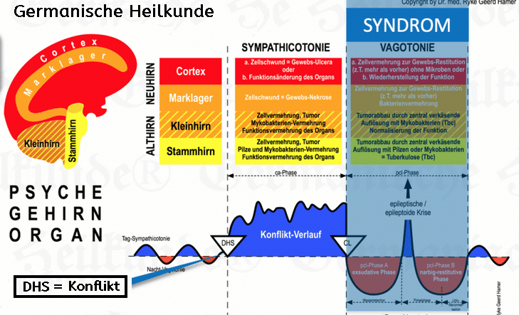
Wer sich vorbereiten will:
Dr.med.R.G.Hamer:
Tonkassette von 1995: Einführung in die Neue Medizin
Die Eiserne Regel des Krebs (1984)
Ing. Helmut Pilhar: (Kanal)
https://www.youtube.com/channel/UCMs0QwpkQy_3S72FdMaXs5w
Aktuell zu C. und DS: 3te Kochsche Postulat wissenschaftlich widerlegt
Ing. H.Pilhar: GHk - Einfuehrung
Ing. H.Pilhar: Worum geht es? Die roten Fäden!
Allgemein GNM:
Link 1 zu Lunge und Tbc
Link 2 zu Lunge und Tbc
Sonderprogramme allgemein
Links zum Bücherkauf:
amici-di-dirk.com
/111111111111111111111111111111111111111111111111111111
|
Wer unsere Arbeit unterstützen möchte (haben auch Fixkosten für Webspace und das Streamen), kann dies gerne tun.
Spendenbeträge, auch sehr kleine, evtl.regelmäßig, bitte per PayPal an
www.paypal.com/paypalme/Perlenschnur
oder direkt an unser Vereinskonto, siehe Impressum
Eintragen in Newsletter
Home
| Termine
| Videos
| Livestreams
| Links
| Doku
| UeberUns
| Impressum
| Newsletter
| Datenschutz
| Sitemap
|